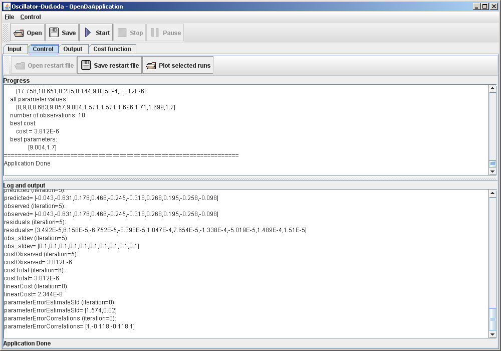
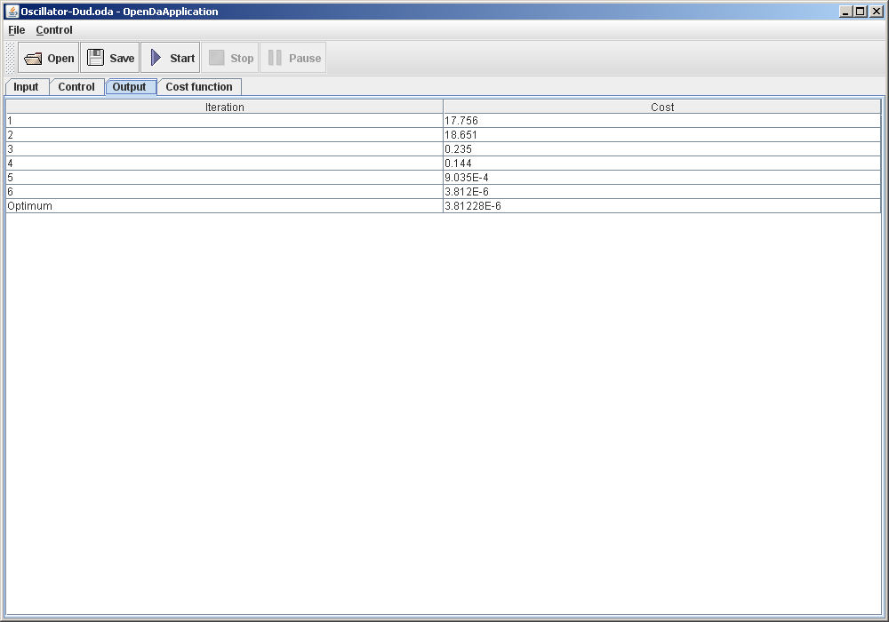
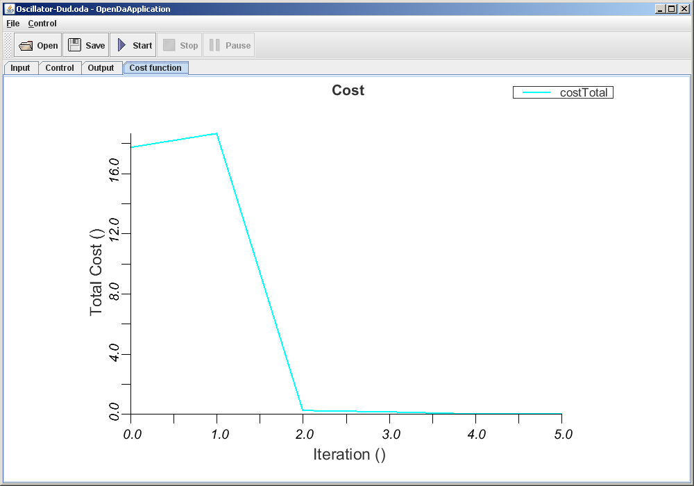

OpenDA tutorial: Examples
You can find examples in the doc/examples directory.
Example 1: Oscillator-Dud application
In this example, we will learn how to use OpenDA for model calibration. To do so, we use an Oscillator model, which is one of the
OpenDA internal/toy models. The algorithm used in this example is the Dud (which stands for
D
oesn't
U
se
D
erivative).
- Check and examine the simple_oscillator directory. It should contain a main configuration file Dud.oda
and three directories, each contains a data-assimilation component: algorithm, model, and stochobserver. Each directory contains a
configuration file for the respective component: dudAlgorithm.xml, OscillatorStochModel.xml, and observations_oscillator_generated_for_calibration.csv.
- Run the OpenDA application with Dud.oda as the main configuration file in the mode that you prefer (with or
without GUI). In GUI mode, you can get a real time update of the execution by checking either Control, Output, or Cost Function
tabs. See the screenshots below.
- Check the results. Upon completion a new file dud_results.m is created. This file contains the results of OpenDA-Dud
application, which are written in Matlab format. If you have no access to Matlab, then Octave can be used as an alternative.
- Play around with the stopping criteria in dudAlgorithm.xml and see if the results are different from the
previous ones. See the XML documentation for the description of each
XML attribute.



Example 2: Oscillator-Simplex application
To edit the .xml files, the user is adviced to use a XML validity editor, of which many can be found on-line (for free).
In this example, we are going to use the same set of model and observation as in the previous one, but use a different algorithm for
solving the parameter estimation problem. This will illustrate how easy it is in OpenDA to couple different algorithms to the
existing model and observation.
- Create a new algorithm configuration file: simplexAlgorithm.xml. Store it in the algorithm directory.
- Edit the simplexAlgorithm.xml. See the XML documentation for
the description of each XML attribute and example of simplex algorithm configuration file.
- Create a new main configuration file Oscillator-Simplex.oda, by copying Oscillator-Dud.oda.
- Edit Oscillator-Simplex.oda:
- set the algorithm className to the one of Simplex.
- set another name for the resultWriter configString to be different from the previous one to avoid overwriting the
previous result.
- Run OpenDA application with Oscillator-Simplex.oda as input.
- Check the results and compare them to the ones obtained using Dud algorithm.
Example 3: Oscillator-Powell application
Follow the same procedure as in Example 2, but this time we use the Powell algorithm.
Example 4: Oscillator-GriddedFullSearch application
Follow the same procedure as in Example 2, but this time we use the Gridded Full Search algorithm.
Example 5: Oscillator-EnKF application
In the previous examples, we learnt how to use OpenDA for model calibration/parameter estimation. In this example, we will learn how
to use OpenDA for Kalman filtering. In this particular example we use the Ensemble Kalman Filter (EnKF) algorithm. Follow the same
procedure as in Example 2, but this time we use the EnKF algorithm.
Check the results Enkf_results.m. It contains a number of variables. For this tutorial, the following variables are of importance:
- x_f{time}: model state before data assimilation (forecast state)
- x_a{time}: model state after data assimilation (analysis state)
- obs{time}: observation data. Note that only one state variable is observed.
- pred_f{time}: forecast state variable which corresponds to the observed variable.
- pred_a{time}: analysis state variable which corresponds to the observed variable.
Notice that pred_a is much closer to the obs at each time then pred_f. This illustrates how data assimilation improves the model
accuracy.
Example 6: Oscillator-EnSR application
Follow the same procedure in Example 6 for Ensemble Square Root filter (EnSR).
Example 7: Lorenz-EnKF application
In the previous examples, we learnt how to use different algorithms for the same set of model and observation. In this example, we
will learn to couple another set of model and observation to the existing algorithms. We use the Lorenz model, which is another toy
model available in OpenDA. Adjust the relevant XML attributes and elements in the main configuration files created in the previous
examples to work with the Lorenz model and its available observation data observations_lorenz_generated.csv.